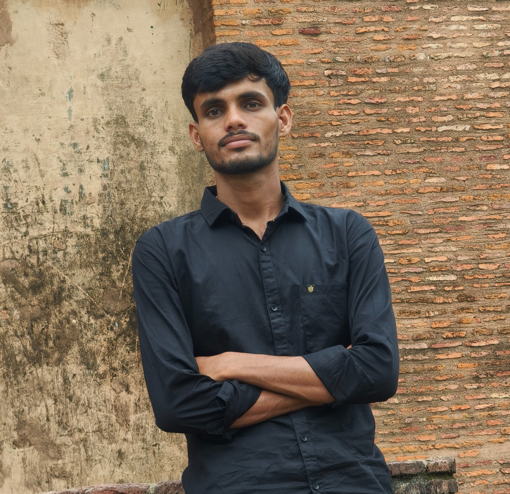

Java
Practising core syntax, conditions, loops, arrays, and strings.
LEARNING
Rampratap.HELLO, WORLD. I'M
CSE Student | AI Enthusiast | Aspiring Software Developer
I’m building my foundation in programming, web development, and AI concepts—one project and one concept at a time.
01 class Developer {
02 String mindset = "keep learning";
03 void build() {
04 solveProblems();
05 }
06 }
01 / ABOUT ME
I’m pursuing B.Tech in Computer Science Engineering (AI) at Babu Banarasi Das University, Lucknow. I’m building my foundation in programming, web development, and AI concepts while learning how to turn ideas into useful software.
I believe progress comes from consistency: learning a concept, practising it, making mistakes, and trying again. This portfolio shares my current learning journey and the projects I’m working on.
02 / CURRENT TOOLKIT
A snapshot of my current learning path. I’ll keep updating this as I gain practical experience.
Practising core syntax, conditions, loops, arrays, and strings.
LEARNINGUsing HTML, CSS, and JavaScript to build responsive web pages.
IN PROGRESSDeveloping programming fundamentals and practising with small exercises.
LEARNINGLearning version control and keeping code in repositories.
PRACTISINGExploring foundational concepts through coursework and study.
EXPLORING03 / SELECTED WORK
These projects represent what I’m building and practising right now. I’ll add more as I complete and document them.
A responsive portfolio website introducing my background, current skills, and learning journey.
A growing collection of coding exercises and practice repositories as I strengthen my Java fundamentals.
04 / GET IN TOUCH
Have feedback, an idea, or an opportunity to share? I’d be glad to connect.
B.Tech CSE (AI) · Babu Banarasi Das University, Lucknow